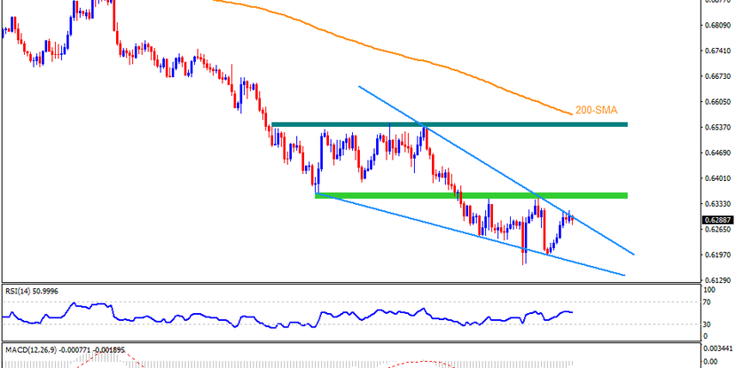
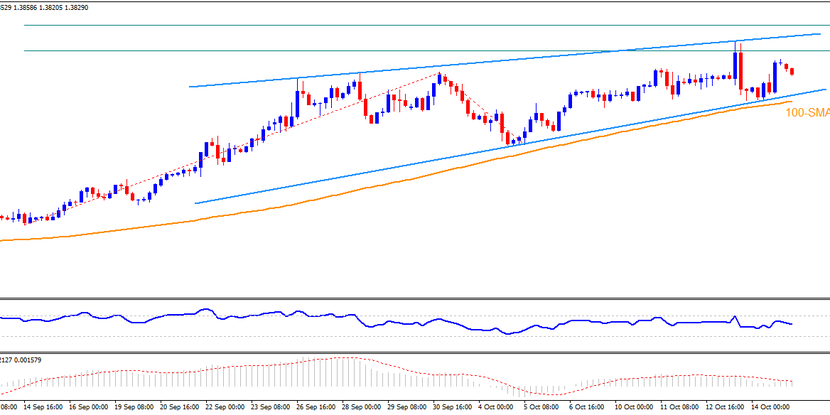
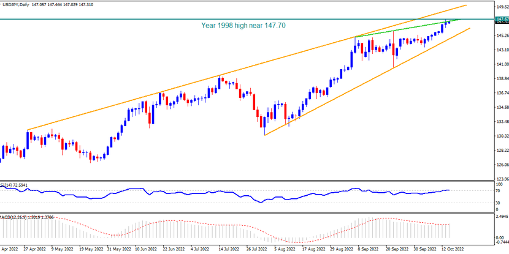
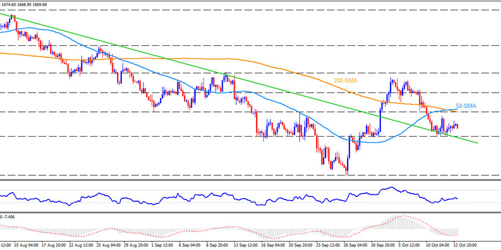

<div class="container">
    <div class="marketInsight">
        <div class="marketInsight-hot">
            <a href="#!" class="marketInsight-hot__link">
                <div class="marketInsight-hot__content">
                    <div class="marketInsight-hot__heading">
                        Technical Analysis: AUDUSD braces for recovery near YTD low, 0.6365 is crucial
                    </div>
                    <p class="marketInsight-hot__desc">
                        AUDUSD rebounds inside a three-week-old falling wedge bullish chart formation and it becomes
                        more important for the short-term buyer’s return.
                    </p>

                    <p class="marketInsight-hot__date">2022-10-18</p>
                </div>
                <div class="marketInsight-hot__image">
                    
                </div>
            </a>
        </div>
        <div class="marketInsight-older">
            <a href="#!" class="marketInsight-older__link">
                
                <p class="marketInsight-older__text">
                    Technical Analysis: Rising wedge challenges USDCAD bulls below 1.4000
                </p>
            </a>
            <a href="#!" class="marketInsight-older__link">
                
                <p class="marketInsight-older__text">
                    Technical Analysis: USDJPY bulls need to cross 147.70 to stay on the table
                </p>
            </a>
            <a href="#!" class="marketInsight-older__link">
                
                <p class="marketInsight-older__text">
                    Technical Analysis: Gold’s rebound remains unconvincing below $1,692
                </p>
            </a>
        </div>
        <ul class="marketInsight-list"></ul>
        <ul class="marketInsight-pagination">
            <li class="hide"><a href="#!"><</a></li>
            <li class="active">
                <a href="#!">1</a>
            </li>
            <li>
                <a href="#!">2</a>
            </li>
            <li>
                <a href="#!">3</a>
            </li>
            <li>
                <a href="#!">4</a>
            </li>
            <li><a href="#!">></a></li>
        </ul>
    </div>
</div>
